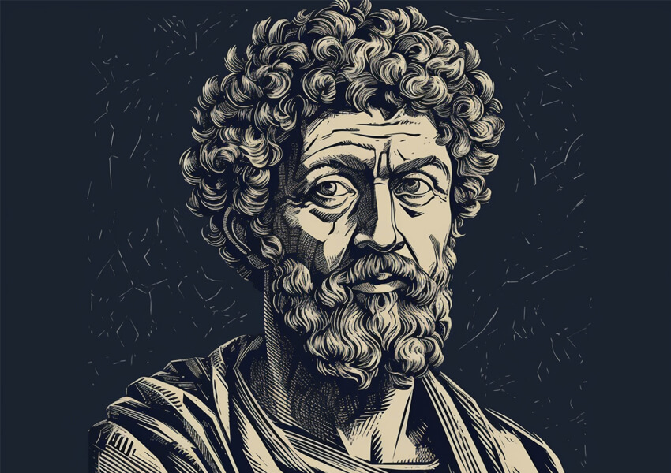

10 profound questions about the mind
Exploring the intricacies of the human mind and consciousness, this article delves into 10
profound philosophical
questions, of the geatest philosphers, about the nature of the mind. From the enigma of free
will to the mysteries of
identity and perception, these
inquiries challenge our understanding of what it means to be conscious beings....
Read more!

Who was Marcus Aurelius?
Marcus Aurelius, a name synonymous with stoicism, wisdom, and Roman leadership. In this article,
we delve into the life
and legacy of this remarkable Roman Emperor. From his reign during a pivotal period in history
to his enduring
philosophy, we uncover the profound impact of Marcus Aurelius on both ancient and modern
thought....
Read more!
Using the socrates thinking in your daily life
Harnessing the timeless wisdom of Socrates, this article delves into the applicability of his
philosophical approach in
today's world. As we navigate complex ethical dilemmas and critical thinking challenges,
Socratic principles of inquiry
and self-examination continue to serve as invaluable guides, fostering intellectual growth and
ethical decision-making
in our modern age....
Read more!